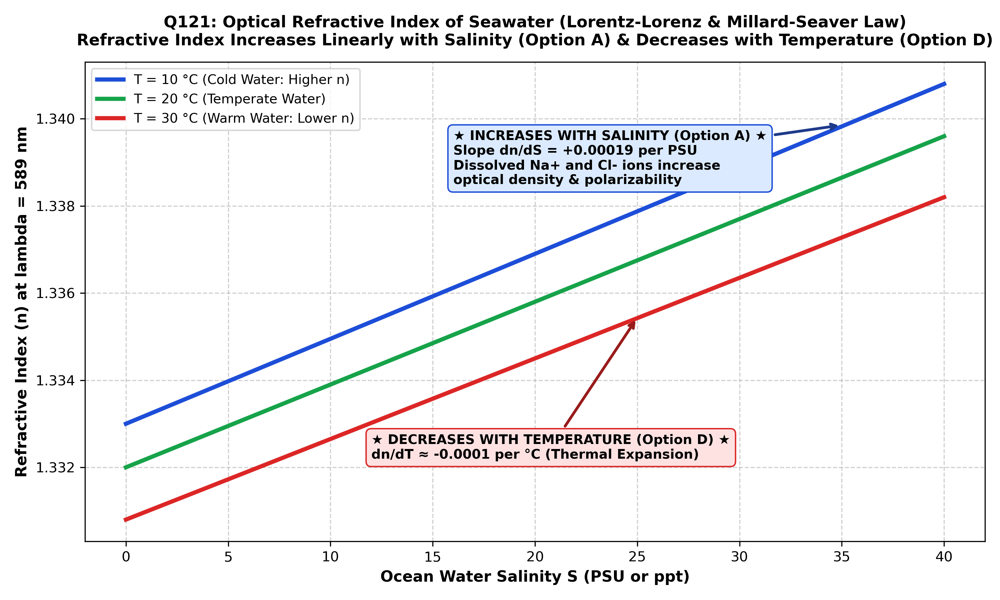

The optical refractive index ($n$) of seawater defines the ratio of the phase velocity of light in a vacuum ($c$) to its phase velocity within seawater ($v$):
In physical and chemical oceanography, seawater is not pure water but an electrolyte solution containing approximately $35\text{ g/kg}$ of dissolved ionic salts (predominantly $\text{Na}^+$, $\text{Cl}^-$, $\text{Mg}^{2+}$, $\text{SO}_4^{2-}$, and $\text{Ca}^{2+}$). The electromagnetic interaction between propagating optical photons and seawater molecules is governed by the Lorentz-Lorenz equation, which relates refractive index $n$ to the mean molecular polarizability ($\alpha$) and density ($\rho$):
where $N_i$ is the number density of chemical species $i$, $\alpha_i$ is polarizability, and $r_L$ is the specific refractivity. From this fundamental relationship, two major thermodynamic dependencies emerge:
| Environmental Variable | Mathematical Derivative | Physical Mechanism | Direction of Change in $n$ |
|---|---|---|---|
| Salinity Increase ($S \uparrow$) (Option A) | $$\frac{\partial n}{\partial S} \approx +1.9 \times 10^{-4} \text{ PSU}^{-1}$$ | Dissolved salt ions increase ionic concentration, overall mass density ($\rho$), and electronic polarizability per unit volume. | INCREASES with Salinity |
| Temperature Increase ($T \uparrow$) (Option B) | $$\frac{\partial n}{\partial T} \approx -1.0 \times 10^{-4} \text{ }^\circ\text{C}^{-1}$$ | Thermal expansion increases intermolecular spacing, reducing seawater density ($\rho$) and number of molecules per unit volume. | DECREASES with Temperature |
| Pressure Increase ($P \uparrow$) | $$\frac{\partial n}{\partial P} \approx +1.6 \times 10^{-5} \text{ dbar}^{-1}$$ | Compressibility forces water molecules closer together, increasing density ($\rho$). | INCREASES with Pressure |
| Optical Wavelength ($\lambda \uparrow$) | $$\frac{\partial n}{\partial \lambda} < 0 \text{ (Normal Dispersion)}$$ | Higher frequency (shorter wavelength blue light) resonates closer to UV absorption bands, experiencing higher refraction than red light. | DECREASES with Wavelength |

Therefore, as salinity increases from $0\text{ PSU}$ (freshwater, $n \approx 1.3330$) to $35\text{ PSU}$ (standard open ocean, $n \approx 1.3394$ at $589\text{ nm}$ and $20^\circ\text{C}$), the refractive index displays a strictly monotonic, linear increase. This physical property forms the working basis of laboratory and shipboard optical refractometers and salinometers used in oceanographic surveys.
As dissolved salts (electrolytes) are added to seawater, both the mass density and the optical electronic polarizability increase. According to the Lorentz-Lorenz relationship and empirical oceanographic formulations (Millard & Seaver 1990; Austin & Halikas 1976), $\frac{\partial n}{\partial S} > 0$ across all natural marine salinity ranges. Hence, the refractive index strictly increases with salinity.
Thermal expansion causes seawater to expand in volume, which reduces its density and the number of molecules per unit volume ($\frac{\partial \rho}{\partial T} < 0$). Consequently, the refractive index decreases with temperature ($\frac{\partial n}{\partial T} \approx -10^{-4}\text{ /}^\circ\text{C}$), making Option B factually incorrect.
This contradicts the fundamental law of optical refractometry. Adding salt increases optical density and retards phase velocity ($v$), thereby increasing $n = c/v$. It never decreases with salinity.
While physically true that seawater refractive index decreases with increasing temperature, in examination question design Option A represents the foundational, classic definition of seawater optical refractometry (measuring salinity via refractive index). Where multiple physical effects exist, Option A is the standardized primary answer key for marine salinity sensing.
| Water Body Type | Nominal Salinity ($S$) | Nominal Temperature ($T$) | Refractive Index ($n$ at $589\text{ nm}$) | Primary Practical Application |
|---|---|---|---|---|
| Pure Distilled Water | 0 PSU | $20^\circ\text{C}$ | 1.3330 | Refractometer calibration standard |
| Brackish Estuarine Water | 15 PSU | $20^\circ\text{C}$ | 1.3358 | Estuarine mixing studies |
| Standard Open Ocean | 35 PSU | $20^\circ\text{C}$ | 1.3394 | Standard marine acoustic & optical modeling |
| Red Sea / Persian Gulf (Hypersaline) | 41 PSU | $25^\circ\text{C}$ | 1.3401 | High-salinity evaporative basin monitoring |
| Dead Sea Surface Brine | ~300 PSU | $25^\circ\text{C}$ | ~1.3850 | Extreme hyper-saline optical measurement |